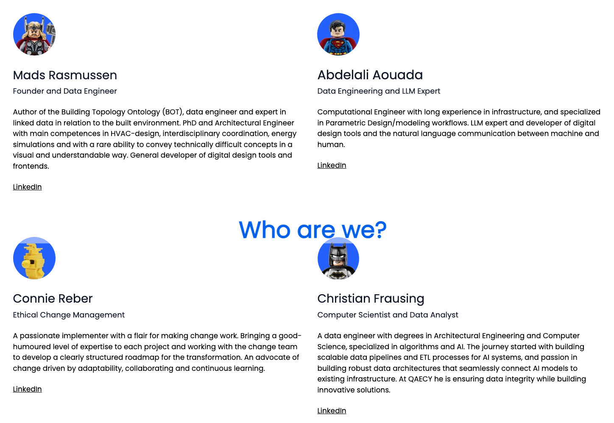
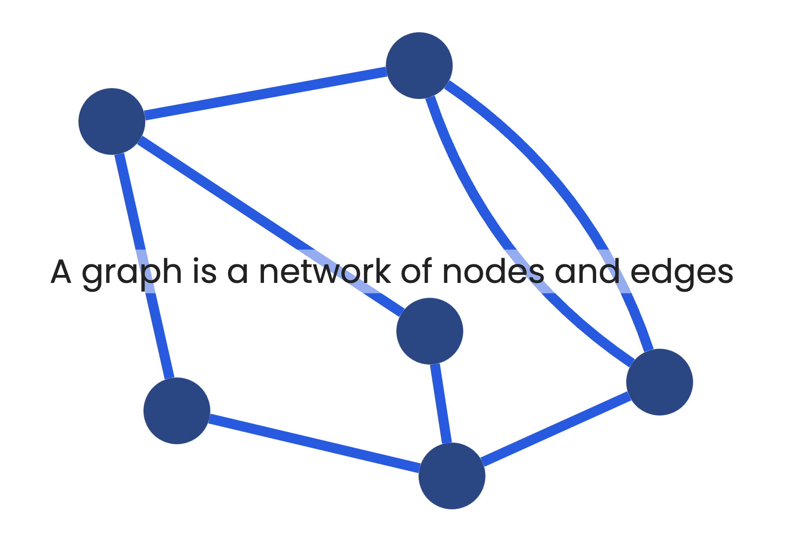
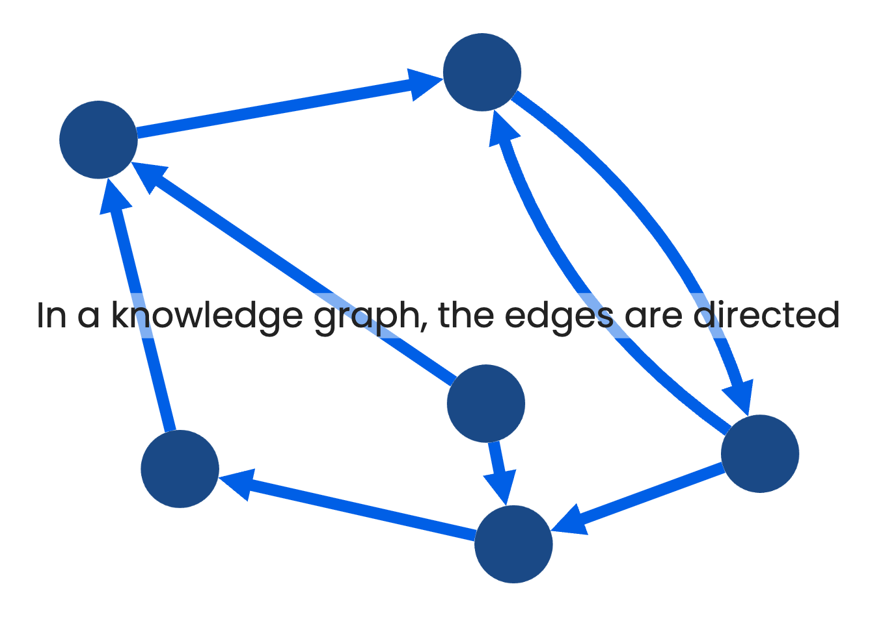
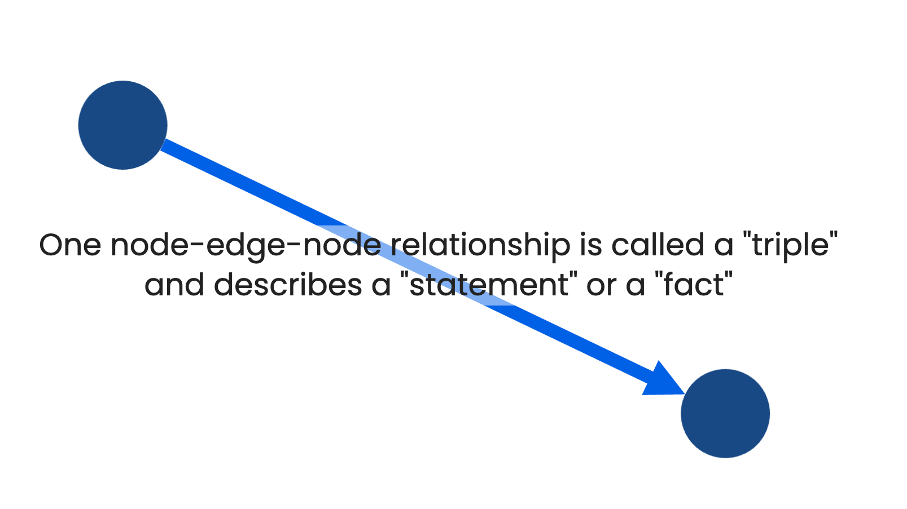
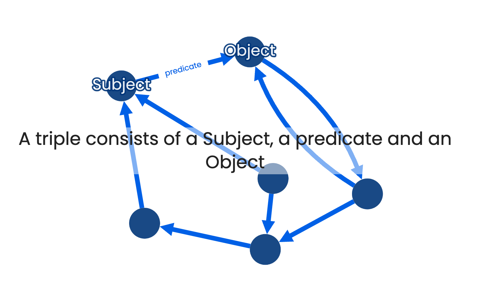
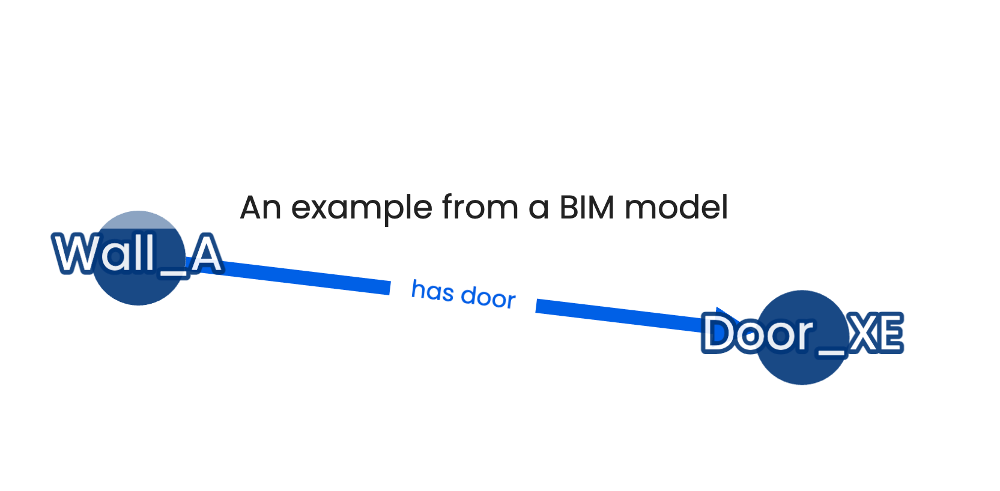
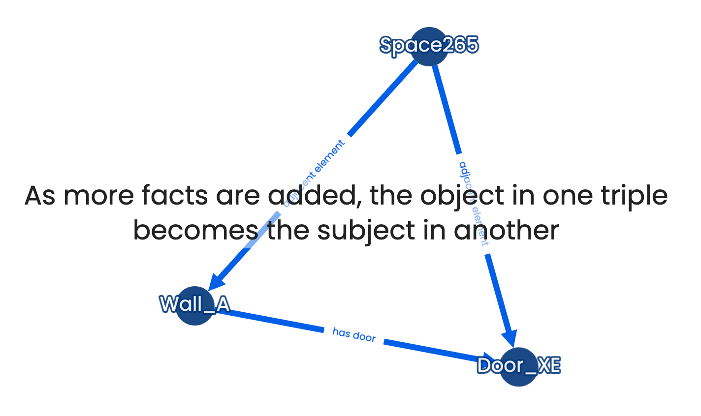
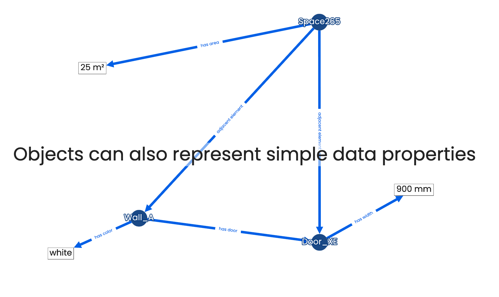
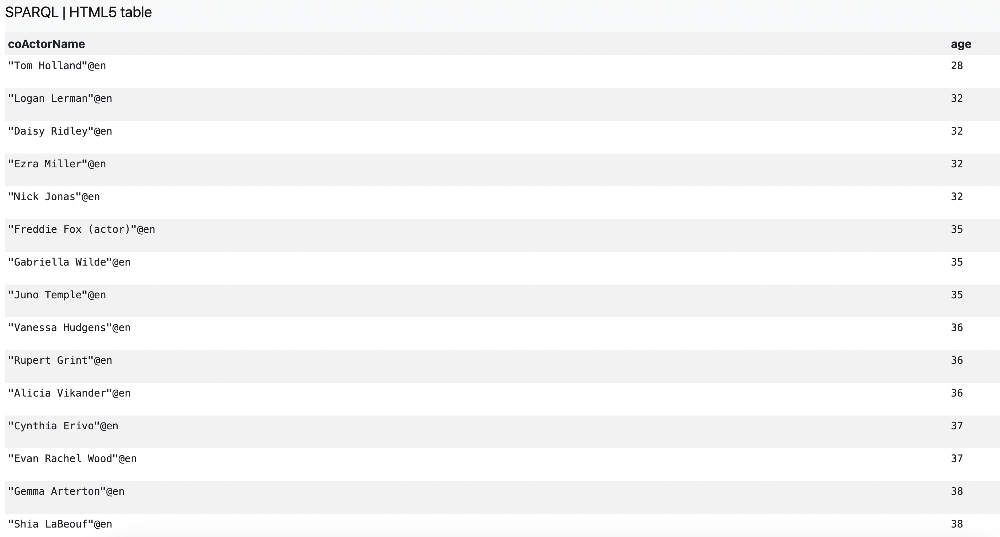

GraphRAG for AEC: Unlocking Insights from BIM Data
Who are we?
What is RAG?
RAG
Retrieval-Augmented Generation
And what if I wish to search across multiple documents?
\( \rightarrow [-0.2, 0.1, \dots, -0.5, 0.1] \)
\[ \begin{bmatrix} 0.125 & -2.103 & \dots & -2.005 & 0.012 \\ 0.615 & -1.142 & \dots & 1.945 & -2.113 \\ \vdots & \vdots & \ddots & \vdots & \vdots \\ 0.712 & 1.153 & \dots & -1.721 & -0.852 \\ -0.925 & -0.903 & \dots & 1.044 & -1.412 \end{bmatrix} \rightarrow \]

- How RAG improves the accuracy and relevance of LLM outputs by grounding them in external knowledge.
- Why RAG is particularly valuable for domains with complex, evolving information, such as AEC.
Graph RAG
At  we
process documents through a set of pipelines to establish the RAG foundation
we
process documents through a set of pipelines to establish the RAG foundation
In addition to vector embeddings we produce a Knowledge Graph
A graph is a network of nodes and edges
In a knowledge graph, the edges are directed
One node-edge-node relationship is called a "triple" and describes a "statement" or a "fact"
A triple consists of a Subject, a predicate and an Object
An example from a BIM model
As more facts are added, the object in one triple becomes the subject in another
Objects can also represent simple data properties

These graphs can grow to unbelievable sizes.
consists of 9.5 billion triples!
https://bit.ly/48kp6l0
- How does the LLM access it?
- Different approaches...